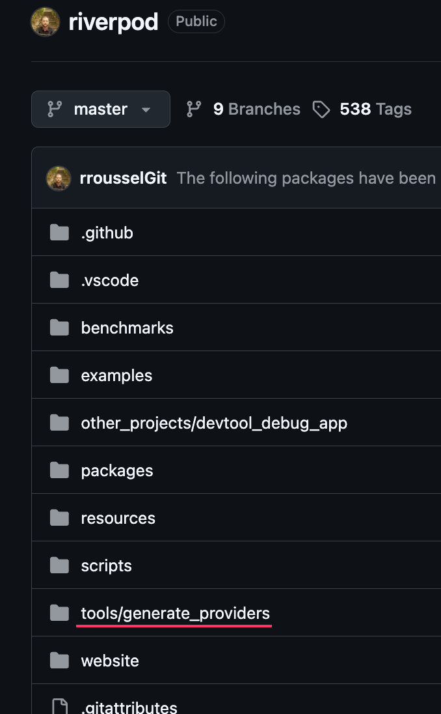
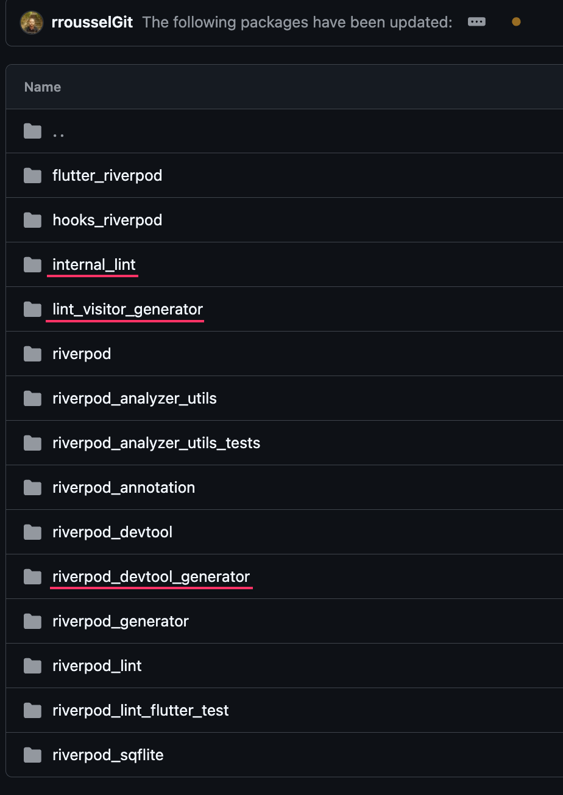

Flutter Conference Talk
Build devtools for your app
RR
Rémi Rousselet
Creator of Riverpod, Freezed, & Flutter DevTools
When I wrote the description for this talk, originally I planned on just talking about how to write Flutter DevTool extensions like the Riverpod extension with time travel. But the more I use AI, the more I realize: lots of developers are deferring programming to AI now.


I've always been passionate about building tools that empower developers, from code generators to ecosystem tooling across Riverpod and Provider projects.
The Original Proposal
- Explain how to code Flutter DevTool extensions by hand.
- Share lessons from building Riverpod tools (time travel, state inspection).
- Broaden into writing custom shell scripts, lints, and devtools tailored to your apps.
The Awkward Reality of Coding in AI Era
- If you code through AI, you are not running tools yourself anymore — AI does.
- Even if you want a devtool extension, you'd probably ask AI to write it for you.
- So we'll still talk about custom tools, but contextualized in the modern AI era!
"Why explain how to code a devtool extension by hand when developers defer their programming and tool execution to AI?"
So we'll still talk about tooling for your own personal apps. But I'll contextualize it in the modern AI era: Why create tools, When to/not to, Which tool to create, and How to create them.
1. Machine Readable
Structure outputs (e.g., --machine=json) so AI agents and scripts can parse results unambiguously without regex or guessing.
2. Human Operable
Ensure human developers can still run, inspect, and invoke the tool manually via terminal or IDE when reviewing work.
3. Simple to Test
Design integration tests using plain .dart files or Process.run so tools remain rock-solid across updates.
These three guidelines apply to every single tool we build: Lints, CLIs, Code Generators, MCP servers, and DevTools.
Consider enforcing style guides: "Do not hardcode text inside Widgets". We could write an AI Skill, or a custom Lint rule plugin.
Approach A: Writing an AI Skill
- Dead easy to write in markdown.
- Non-deterministic: AI ignores rules sometimes; mistakes slip by and accumulate. Model updates change skill effectiveness.
- Context Bloat: Overwhelms agent context, inflating costs and missing steps.
- Pricy long term: Agents are expensive to run.
Approach B: Custom Lint Rule Plugin
- Sounds scary to do: No previous experience writing analyzer plugins.
- Deterministic: Always produces predictable, exact results. Bugs can exist in lint, but behavior is predictable.
- Zero runtime token cost: Millisecond execution via
dart analyze.
Skills are dead easy but non-deterministic and pricy long-term. Lints sound scary but are 100% deterministic.
💡 Core Philosophy: Instead of using AI to do a task manually every time, use AI to write a tool that will do said task!
"Hey Gemini, create a new lint rule using dart_analysis_server_plugin. This rule should disallow ' and \" inside Widgets."
AI Price Ramp-Up with Bad Skills
A skill running on every PR saying "Scan codebase for hardcoded text" costs huge money over time due to tons of file reads on every PR.
English Prompt Subtleties
Saying "scan only modified files" sounds simple, but English is subtle. AIs will still read way more files than intended without you noticing.
🎬 Demo Note: [Insert video comparing speed & cost of prompt-based skill vs. native lint rule side-by-side].
Initial cost of creating a lint rule is slightly higher than writing a skill, but long-term economy and reliability win by a landslide.
Don't spend 10 days and millions of tokens creating a tool that runs once and saves 30 minutes. Calculate time gained:
- 10-min weekly task by hand in team of 10 = $10 \times 10 \times 56 = 5600$ mins/yr = 93 hours/year.
- With tool (takes 1 min) = $9 \times 10 \times 56 = 5040$ mins/yr = 84 hours/year saved!
- If tool takes 1 dev 10 days (40h) $\rightarrow$ break even after ~1 year (probably not worth it).
- If it takes half a day (4h) with AI $\rightarrow$ 3 weeks to break even!
⚠️ Token Expense: Running a tool for 30s 1,000 times/yr costs electricity. Running an agent for that costs thousands of dollars on tokens.
This ignores maintenance cost or bug reduction, but helps detect cases where gain is too small compared to investment.
There are many different kinds of developer tools available in Dart/Flutter:
Custom Lints
Enforce code conventions & prevent bugs via analyzer plugins.
Code Generators
Ensure consistency & deterministic updates across data models.
CLIs & Scripts
Universal scripting interface for Humans, CI, and AI agents.
MCP Servers
Stateful Machine Context Protocol servers for AI agents.
DevTools Extensions
Visual GUIs & inspectors for human developers and QA.
Codemods & Docs
Automated API refactoring, architecture graphs, & docs.
Let's look at each tool category in detail: Pros, Cons, Personal Recommendations, and Testing Tips!
Pros
- Cheap to build: Once project is set up, adding rules takes half an hour including tests.
- Naturally visible to Humans, AIs, and CI via
dart analyze.
- AI fixes code automatically: Deterministic output catches mistakes, and AI keeps running until diagnostics pass.
Cons
- RAM cost: Low-end machines can struggle with analyzer plugin RAM usage.
- Slows down
dart analyze slightly to spawn plugins.
- Not everything in styleguides can be implemented as a lint.
🧪 Exact Testing Tip: Enable the rule in a test project and create .dart files with examples. Add // ignore: my_rule on warning cases. Enable unnecessary_ignore to highlight ignores that do nothing. Run dart analyze!
Personal note: I highly recommend every project implement custom lint rules. You can automate a significant part of your styleguide in a few hours.
The Reality of Quick Fixes
- They accompany lint rules to provide automated fixes.
- Pros: Cheap to build.
- Cons: A lot less useful (requires making a mistake first); writing automated fixes isn't always possible.
- AI Trait: AIs are currently a bit bad at using quick-fixes — they'll often edit code themselves instead of invoking the quick-fix.
Personal Recommendation
- For internal styleguides: Skip writing quick fixes! We don't care about deterministic output for fixes. AI will fix it for you.
- For Open Source packages: Writing a quick fix is worth it because it reaches thousands of developers!
Skip quick fixes for internal team lints, but definitely write them if you maintain a public open source package.
Common Argument: "Codegen reduces boilerplate." $\rightarrow$ I couldn't care less, especially with AI!
What Codegen is ACTUALLY About
- Removes PR Code Review: You don't read how
copyWith is implemented every time a class is added (e.g. Freezed).
- Ensures Consistency: Generators are deterministic, so data classes behave identically.
- Makes Updates Simple: Adding/removing fields auto-updates
==, hashCode, copyWith, toString without forgetting a field.
Static Analyzability
- Annotations make code statically analyzable.
- This compounds with creating other tools down the road.
- Significant bug reduction across the application.
Codegen is about zero PR review on boilerplate, uniform behavior, and deterministic updates when fields change.
Definitely Automate
- Backend Data Layer: GraphQL / Swagger / gRPC schemas to Dart models.
- On-Device DB: Table schemas.
- Assets:
FontAwesome.check instead of 'fa check'.
- Translations:
L10n.of(context).homePageTitle.
Maybe Automate
- Routing: Type safety on route parameters & static route list.
- Widget List: Auto-generated widget browser via
build_runner.
- Error-Prone Tasks: Auto-generated
toString to prevent stale fields.
Do NOT Automate
- Minor Boilerplate Gains that aren't error prone (e.g. my old
functional_widget saving 2-3 lines on StatelessWidgets).
💡 Pro Tips: Commit generated files and let CI auto-commit codegen updates. Codegen can be a basic Dart script reading JSON and outputting a file — it doesn't have to be complex build_runner logic!
🧪 Testing Tip: Avoid brittle tests checking string content (generated code contains void foo()). Write plain .dart files in test/integration/* using `@data class Foo {}`, run generator, and test runtime behavior!
Many data layer codegen tools have existing open source packages. Simple Dart scripts that read JSON and output files count as codegen too!
Think bash scripts, but in Dart land! Dart is a very good scripting language. Write Dart scripts!
Must-Have Commands for All Projects
./install: Check Flutter/Dart versions, missing tools (Docker, CLIs), set up hidden .env & codegen. Link solutions for missing tools!./run: Start emulators, Docker, local servers../test: Unit & integration tests on browser/simulators../deploy: Update changelogs, bump versions, release flags, publish to stores.
CLI Architecture & Testing
- CLI as Abstraction Layer: GUIs should work by invoking your CLI under the hood.
- Low Value: Module templates (e.g.
./create_module — AI does it easily, costly to maintain).
- Testing Tip: Integration tests are super easy! Offer a
--machine=json flag and test via:
Process.run('dart', ['path/to/bin.dart', '--my-flag'])
Bash can be daunting on Windows. Write Dart scripts instead! CLIs are universally usable by humans, AIs, and CI pipelines.
What is an MCP Server?
- Server running locally or remotely using a protocol designed for AI agents (WebSocket + JSON object).
- Official Dart package available:
package:mcp.
- When to use over CLI: Need a long-lived server to save startup costs or persist state, where humans and CI have no business interacting with it.
Practical Tool Ideas for LLMs
- API Probe: Allow AI to make API calls using the current user token to debug live endpoints.
- Test User Directory: Debug endpoint listing test users & metadata.
- App Control: Teach AI how to login/logout and navigate routes to find specific widgets on screen.
"Enables agent prompts like: 'Find a user capable of displaying X in page Y' where the agent repeatedly logs in/out and navigates autonomously."
MCPs are the perfect abstraction when allowing LLMs to perform tasks that humans would generally do in a GUI.
Human DevTools
- Destined for Humans (state inspector, routing tree viewer with GUI).
- In-App DevTools: Usable after app build when QA is testing on device.
- External DevTools Extensions: Relies on Debugger API, static analysis, or source files.
The Modern AI Era Rule
- Don't write JUST a devtool! Make it usable by AIs too.
- If you build an in-app log viewer, expose an MCP server endpoint alongside it so LLMs can access logs while the debugger is running.
- Tool Ideas: List of all logs & network requests, live theme switchers.
Devtools are the other side of the MCP coin. Expose MCP endpoints so both human developers and AI agents can query application state.
Static Analysis (package:analyzer)
Don't rely on greps/regex and string code parsing! Analyzer is a must for precise code views.
- List all classes across workspace.
- Find everywhere a class is used.
- Inspect methods, doc comments, annotations, and AST fields.
Runtime Analysis (package:vm_service)
Inspect live application memory via VM Service URI (from logs or VS Code clipboard).
- Arbitrary code execution (
eval(code) like VS Code Debugger Expression Evaluator).
- Inspect full application memory.
- List all object instances and read field values live.
A large chunk of tools fall into static analysis (analyzer) or runtime tools (vm_service).
riverpod_lint & riverpod_generator
- Shared Implementation: All provider metadata parsing logic is extracted into
riverpod_analyzer_utils library and used by both tools.
- Technically allows anyone to build custom Riverpod lint rules or documentation tools.
Riverpod DevTool & MCP Refactor
- Uses
vm_service to inspect running app & display all providers and their states.
- Supports time travel state history & live provider modification.
- Current Refactor: Extracting logic so a Riverpod MCP Server can be created for AI agents!
By sharing analyzer utilities and vm_service logic, we can easily power lints, codegen, devtools, and MCP servers simultaneously.
Skills ARE for Discoverability
- Installing a tool doesn't mean the AI knows it exists.
- A simple prompt: "You can inspect memory of the debugged app using MyState MCP" is enough for AIs to use it.
DON'T Write Tool Manuals in Skills
- Tools have natural discovery mechanisms!
- CLIs have
--help (agents check this natively).
- MCP servers list tools with descriptions.
- Generators have READMEs and Dart doc comments.
🚫 Avoid Context Pollution: Don't pollute prompt context with manuals the AI needs once in a blue moon. Using skills to solve coding problems directly is a last resort!
Skills are for discoverability. Let tools document themselves through --help flags, MCP tool schemas, and Dart docs.
Takeaway & Philosophy
The AI Tooling Philosophy
- Don't replace tools with prompts. Use prompts to create your tools.
- Avoid using Skills to solve problems. Use them to make an agent discover the tools to solve said problem.
- Improve code quality thanks to determinism, reduce execution time, and lower token costs paid to LLM providers.
Thank You! Q & A
Thank you! Remember: Don't replace tools with prompts, use prompts to create your tools.